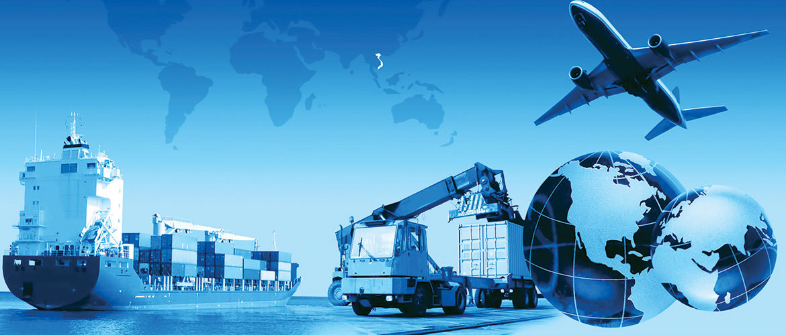

«РА Логистик» — компания, которая занимается грузоперевозками по всему миру. Залог успеха работы компании кроется в тщательно подобранном профессиональном коллективе, где каждый сотрудник до мельчайших деталей знает свою работу и прекрасно в ней разбирается. Именно поэтому мы предлагаем максимально выгодные условия сотрудничества, в выигрыше от которого остаются и наши клиенты, и сама компания. Все сотрудники компании имеют богатый опыт работы и высокую квалификацию, потому могут мгновенно решать даже сложные задачи по перевозке грузов.
Среди наших клиентов много небольших предприятий и крупных организаций, некоторые из которых стали нашими постоянными клиентами и пользуются услугами нашей компании. Большое количество постоянных клиентов красноречиво говорит о том, что нам доверяют. Немаловажной составляющей нашего успеха остаётся высочайший сервис. Наши специалисты разработают детальный план доставки груза, внимательно следят на всем маршруте следования, обеспечивают бережную выгрузку и осуществляют контроль над доставкой груза вплоть до получения его адресатом.
Немалую часть нашей работы составляют грузоперевозки автотранспортом и в случае необходимости мы можем организовать доставку груза по морю. «РА Логистик» является одной из немногих компаний в Украине, которая занимается мультимодальными грузоперевозками. Это означает, что в зависимости от выбранного маршрута доставки наши специалисты организуют доставку одного груза разными видами транспорта, причем клиенту достаточно заключить с нашей компанией договор о транспортировке груза, а все остальные заботы берут на себя наши специалисты.
Благодаря индивидуальному подходу к каждому клиенту, компания обеспечивает эффективную и бережную доставку груза в максимально короткие сроки. Наши специалисты рассчитывают оптимальный маршрут доставки, чтобы груз прибыл быстро, а стоимость такой доставки была минимально возможной, поэтому международные грузовые перевозки вместе с нами доступны всем и каждому. Если у Вас возникли какие-то вопросы или Вы хотите воспользоваться услугами нашей компании, свяжитесь с нашими экспедиторами, и они подробно опишут условия нашего сотрудничества и ответят на все интересующие Вас вопросы. Выбор всегда за Вами!
